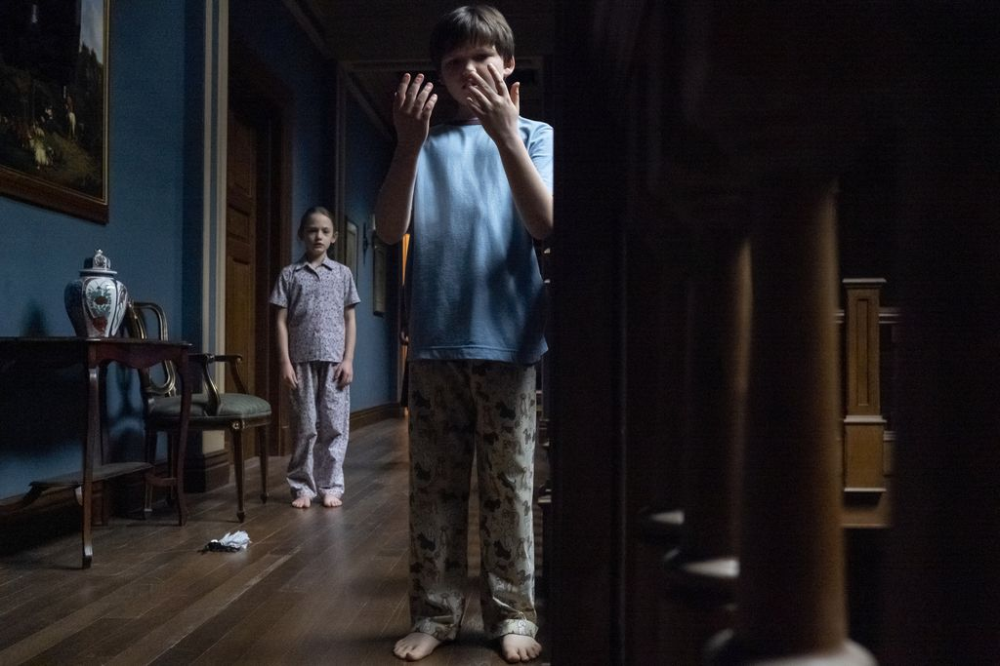
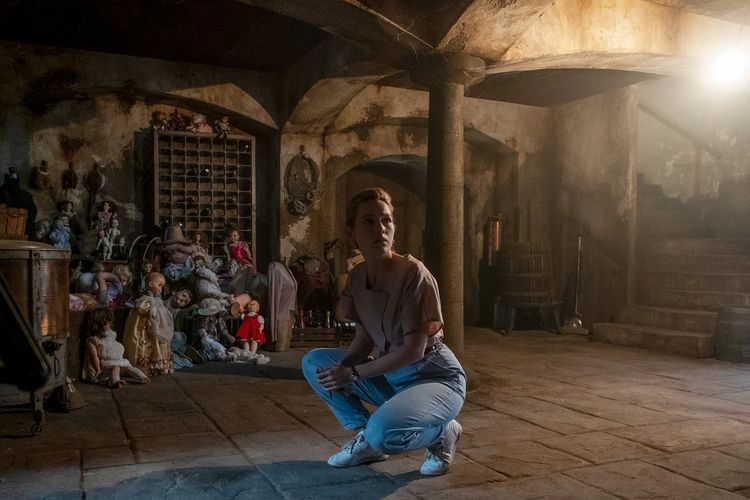

Sinopsis
Berlatar 1980-an, serial ini mengangkat kisah horor-family dari sebuah keluarga yang tinggal di Desa Bly. Kejadian aneh dan mengerikan di mulai saat pengasuh anak di keluarga Henry Wingrave (Henry Thomas) tewas secara tragis. Henry kemudian mencari pengasuh pengganti untuk merawat dua keponakannya yang yatim-piatu, Flora (Amelie Bea Smith) dan Miles (Benjamin Evan Ainsworth).
Ia pun menemukan sosok pengasuh pengganti bernama Dani Clayton (Victoria Padretti). Dani yang merupakan seorang guru asal Amerika ini pun dipertemukan dengan penghuni lainnya, seperti koki bernama Owen (Rahul Kohli), penjaga lahan Jamie (Amelia Eve) dan pengurus rumah tangga, Nyonya Grosse (T'Nia Miller). Kehidupan Flora, Miles, dan orang-orang yang tinggal di Bly Manor rupanya tak bisa tenang. Beragam kejadian aneh pun sering kali mengganggu mereka. Para penghuni meyakini ada yang tak beres terjadi di masa lalu dengan penghuni lamanya. Mereka pun berniat untuk membuka misteri-misteri yang terkubur.

Resensi
The Haunting of Bly Manor adalahserial televisi streaming drama horor supernatural Amerika, yang dibuat oleh Mike Flanagan untuk Netflix, dan secara longgar didasarkan padakarya Henry James . Ini adalah seri lanjutan dari The Haunting of Hill House dan entri kedua dalamseri antologi The Haunting. Tim kreatif dan sebagian besar pemeran Hill House kembali ke Bly Manor , tetapi narasi kedua seri tidak terhubung. The Haunting of Bly Manor tayang perdana di Netflix pada 9 Oktober 2020. Victoria Pedretti , Oliver Jackson-Cohen , Henry Thomas , Kate Siegel , Carla Gugino , dan Catherine Parker kembali sebagai bagian dari pemeran untuk seri kedua, memerankan karakter yang berbeda.

Berikut trailer clip dari film The Haunting of Bly Manor. Selamat menonton!